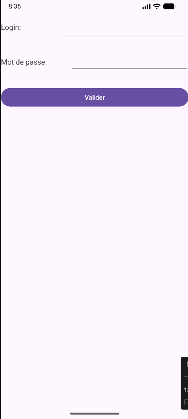
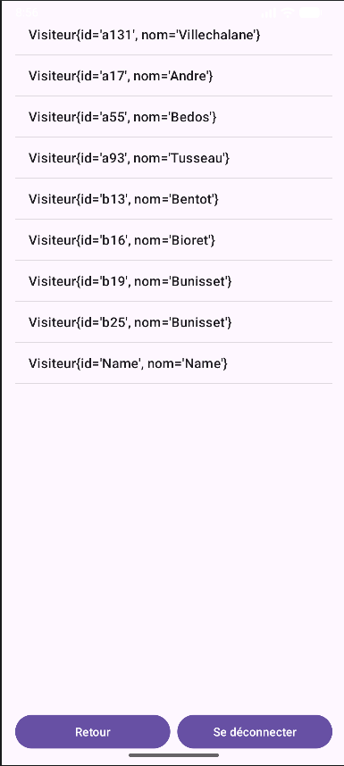
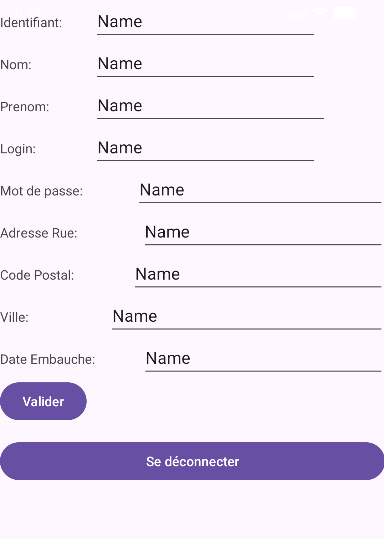
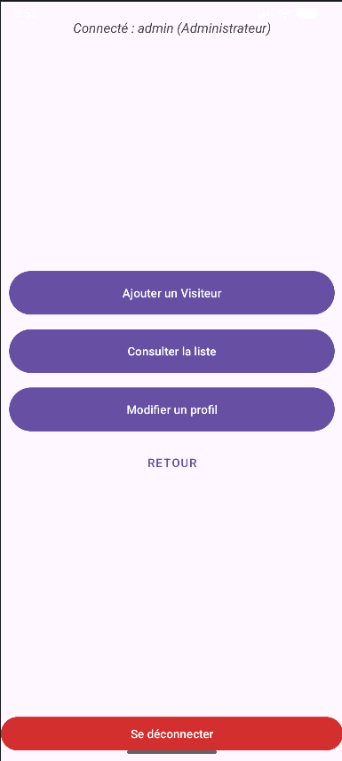

Android Visiteur DAO
Application mobile en Kotlin avec SQLite & MVC
Application mobile Android développée en Kotlin, gérant la consultation et l'administration des visiteurs.
Mise en place d'une architecture MVC et du pattern DAO pour l'accès aux données.

🎯 Contexte & Objectifs
Dans le cadre du BTS SIO, ce projet consistait à développer une application mobile Android permettant la gestion complète d'une base de visiteurs. L'application devait fournir une interface pour consulter les visiteurs, gérer les propositions, et offrir un espace administrateur pour les opérations CRUD complètes.
Le projet mettait l'accent sur les bonnes pratiques de développement mobile : architecture MVC, utilisation du pattern DAO pour la persistance des données en SQLite, et respect des conventions Android avec Material Design.
Points clés :
- Base locale : Gestion avec base SQLite
- Rôles distincts : Espace visiteur (consultation) et espace administrateur
- Opérations CRUD : Ajout, modification, suppression côté admin
⚙️ Architecture MVC & Pattern DAO
L'application repose sur l'architecture MVC Android : les Modèles correspondent aux classes de données (Visiteur, Proposition) et aux DAOs, les Vues aux fichiers XML de mise en page, et les Contrôleurs aux Activities Kotlin.
Contrôleurs (Kotlin)
Les Activities Kotlin font le lien entre les vues XML et les DAOs. La MainActivity gère le point d'entrée et la navigation, tandis que chaque Activity dédiée orchestre les opérations CRUD.
Pattern DAO & SQLite
Implémentation de VisiteurDAO, PropositionDAO et DatabaseHelper. Accès aux données SQLite totalement découplé de la logique métier pour une meilleure maintenance.
Vues (XML)
Les vues Android sont définies en XML (Material Design). L'interface distingue deux rôles : le visiteur en consultation seule, et l'administrateur avec accès complet.
📱 Vues & Fonctionnalités

Vue liste des visiteurs, permettant la consultation rapide des enregistrements depuis la base SQLite.

Interface Administrateur pour l'ajout d'un nouveau visiteur (Formulaire CRUD).

Gestion avancée des propositions avec options de modification et de suppression réservées à l'administrateur.
🎓 Résultats & Apprentissages
Ce projet m'a permis de maîtriser le développement mobile Android en Kotlin et d'appliquer l'architecture MVC dans un contexte mobile. L'implémentation du pattern DAO avec SQLite m'a donné une compréhension concrète de la séparation entre logique métier et accès aux données.
La gestion de deux rôles distincts (visiteur et administrateur) avec leurs interfaces dédiées m'a sensibilisée à la conception d'applications multi-profils et à l'importance du contrôle d'accès côté application.
Compétences BTS SIO validées :
- B2.1 Concevoir et développer une solution applicative
- B2.2 Assurer la maintenance corrective ou évolutive
- B2.3 Rédiger la documentation technique
- B2.4 Concevoir et réaliser une base de données
- B1.1 Gérer le patrimoine informatique